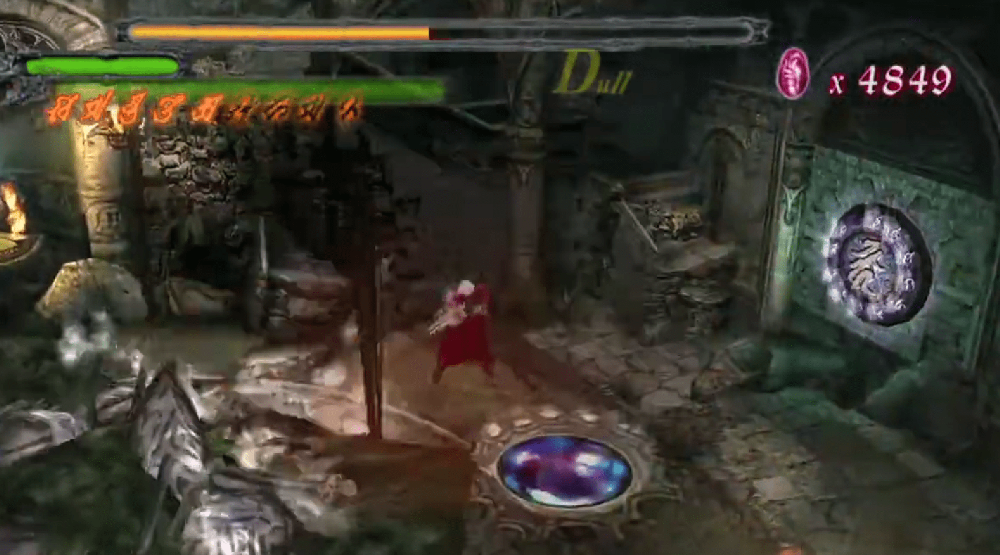

←Misión XVII: Parted Memento
Bueno, sube todas las escaleras hasta las puertas dobles que han aparecido de repente. Durante el día, las escaleras estaban bloqueadas, pero ya no lo están. Atraviesa las puertas hasta llegar a una habitación con escritorios. Acércate al final de la habitación y un cuadro se activará misteriosamente. Mira el cuadro izquierdo y luego salta a través de él con el botón de salto. Terminarás en una versión de pesadilla del coliseo del jardín que exploraste anteriormente (donde finalmente murió Griffon). Intenta salir por las puertas dobles y comenzará una batalla. Mata a los monstruos de hielo. Usa Ifrit ya que hace el máximo daño. ¡Dos Infernos en Devil Trigger matarán a un Frost; conseguir ambos en ambos movimientos te proporcionará mucha vida y recompensas! Después de derrotarlos, atraviesa las puertas dobles. El Alastor y la Escopeta son necesarios para la próxima área. Corre por este pasillo y nota la primera esquina que ves. Verás una puerta cerrada que tendrás que abrir más tarde. Mata a los Marionettes y Fetishes aquí, pero no recibas demasiado daño, ya que hay otra pelea de jefe al final.
Dirígete hasta el final del pasillo principal y entra por la puerta allí. Estás en la Biblioteca. Verás un esqueleto de dinosaurio y te disparará bolas de fuego. Ponte sobre la placa metálica circular en el suelo y equipa Alastor, Force Edge (o Yamato, o Sparda, si quieres). Golpea la bola de fuego de vuelta al monstruo (como en el béisbol) y cuando lo hagas tres veces, activarás el rompecabezas de los rayos de luna y aparecerán algunas plataformas azules espectrales en el aire. Aparecerá un dispositivo de luz en la entrada de esta habitación. Ve hacia la manivela y toma el control de ella (presiona Cuadrado o Cruz). Luego gira tu Stick Analógico Izquierdo para girar el dispositivo hacia el lugar correcto. Esto no es difícil.
Cuando los rayos de luna estén alineados, el Quicksilver será alimentado por la luz de la luna. Omite el rollo de Sailor Moon y avanza hasta el segundo nivel y usa las plataformas azules espectrales para llegar al Quicksilver. También puedes conseguir un fragmento de Orbe Azul en el segundo nivel si encuentras el balcón de la Biblioteca. Saltar directamente hacia arriba en el centro del balcón debería darte el objeto. Regresa a la puerta cerrada que pasaste afuera en el pasillo y ábrela con el Quicksilver. Dentro, debes luchar contra Nelo Angelo por última vez, ¡y es mucho más difícil! Tiene todos los mismos ataques que antes, más dos nuevos que lanzan dagas si está lejos de ti. Siempre ataca a Nelo Angelo después de que falle su ataque (esquiva con el salto), y usa el Kick13 de Ifrit para dañar a Nelo Angelo. Recuerda que las armas de fuego no lo dañarán, a menos que uses la Escopeta. Pero ten cuidado con el retraso entre los disparos, o terminarás recibiendo más daño que Nelo Angelo. Si Nelo Angelo teleporta, no ataques y en cambio esquiva el ataque con un Air Hike o un salto. Cuando Nelo Angelo falle, puedes atacar su espalda y hacer más daño que esperar a que rompa su bloqueo. Cuando Nelo Angelo sea derrotado, mira la escena (y si estás jugando por primera vez, obtén a Sparda). ¡Ahora la misión termina!
Misión XVIII: La piedra del filósofo
No uses Sparda (a menos que tengas un Gameshark o quieras morir). Tendrás la oportunidad de usarlo más tarde. A menos que quieras luchar contra más Frosts o permanecer en esta sección del castillo, ve al pad de teletransporte y vuelve al pequeño estudio en la parte superior de las escaleras. Otra imagen se activará y mostrará una parte hundida del castillo. Salta dentro del otro cuadro. Al igual que con el barco hundido, nada desde la celda y asegúrate de investigar cada celda en busca de barriles y otros objetos. Un fragmento de Orbe Azul está en el área de la celda de la cárcel. En la siguiente área, mata a los tres Sin Scissors con la Needlegun y sal del agua. En la siguiente área seca, te encontrarás en una habitación muy familiar, la habitación en forma de torre con la Sentencia de Muerte. Ten en cuenta que no hay enemigos en esta habitación, así que intenta obtener el fragmento de Orbe Azul en la habitación antes de salir. Comienza atacando el interruptor de escudo circular y llena la habitación de agua. Nada bajo la primera plataforma saliente para activar el fragmento. El objetivo real es llegar a la parte superior de la habitación donde estaba la Sentencia de Muerte y recoger el Huevo del Filósofo antes de que el agua se drene.
Cuando tengas el huevo, entra por la puerta roja a mitad del camino de la habitación en forma de torre y Dante estará en la Sala de la Fuente, pero la habitación está al revés, como en un espejo. Antes de hacer algo estúpido, busca una puerta desbloqueada en el segundo piso de la Sala de la Fuente y entra para encontrar otro fragmento de Orbe Azul. ¿Recuerdas la estatua de león donde colocaste el Orgullo del León al principio del juego? Bueno, coloca el Huevo del Filósofo allí para cocinarlo. Nightmare de la Catedral te ataca nuevamente. La estrategia es básicamente la misma, así que no te preocupes.
La Pesadilla es definitivamente difícil de manejar. También da un poco de miedo mirarlo. En general, practica el golpe y huye, pero cuando golpees, hazlo con fuerza. Además, en cada habitación donde pelees contra él, hay interruptores de escudo circulares que necesitas atacar para "iluminar" la habitación. Sin estos activados, no puede ser herido, así que mantén al menos uno de ellos encendido en todo momento. Aquí están sus ataques. Cuando no tienes ningún círculo lleno, intentará tragarte. Es tu elección, pero en la segunda y tercera pelea, prefiero no dejarlo. Dentro de él hay minibosses y sargassos. Su primera forma tiene a Phantom en ella, la segunda tiene a Griffon, la tercera tiene a Nelo Angelo. Es probable que te den orbes verdes si los vences, pero no es una garantía, y no creo que valga la pena. Simplemente mantén los círculos iluminados y podrás esquivar este ataque. Parece un montículo de lodo cerrándose sobre ti. A menudo sacará electricidad de los círculos en el suelo, pero estoy bastante seguro de que no te hace daño. Invocará pequeños orbes para dispararte que pueden ser derribados si quieres. No hacen demasiado daño. Sin embargo, mientras están disparando, hará varias otras cosas. El más débil de ellos son sus pequeñas criaturas de lodo, que irán tras de ti y eventualmente harán cristales de hielo para lastimarte donde aterricen. Solo corre de ellos y estarás bien. Incluso si uno te atrapa, sigue moviéndote y no te lastimarás. También disparará lanzas de roca desde sí mismo 3 veces para mucho daño, así que esquiva estos.
Su ataque más dañino con diferencia es su rayo azul. Sabrás que viene cuando su esfera sale y las líneas blancas comienzan a fluir por el suelo. En este momento, trata de llegar a la cima de él, o detrás de él. Si estás detrás de él, prepárate para saltar sobre él, ya que lo mantendrá afuera por un tiempo. Cuanto más atrás esté la pelea, más tiempo lo mantendrá afuera. En la tercera pelea, lo mantendrá afuera durante unos buenos cinco segundos, así que ten cuidado. Dañarlo es bastante simple, o eso parecería. Con los círculos iluminados, a menudo dejará salir su esfera. Es una esfera más grande que las que te disparan, y tiene runas en ella. Atácala, y se romperá más y más hasta que él muera. Subir encima de él es lo mejor para esto, pero Air Raid también es bueno. No uses Ifrit en esta pelea, ya que es demasiado lento. Si logras entrar dentro de él y salir vivo, perderá un cuarto de su vida. Eso es mucho, pero es un trabajo duro. También existe la posibilidad de orbes verdes de los monstruos en su interior. Griffon ataca principalmente desde el aire y en el suelo como antes, pero es mucho más débil y recibe más daño. No es una garantía que suelte piedras verdes, así que no recibas demasiado daño. Griffon solo ataca cuando se eliminan todos los Sargassos. ¡Con la Pesadilla derrotada, recoge el huevo y habrás completado la misión!
Misión XIX: Entra al inframundo
Un teletransportador te lleva de vuelta al pequeño estudio en la parte superior de las escaleras con los dos cuadros nuevamente. Retrocede hasta el puente roto y entra en el cuadro derecho. En el dormitorio, investiga el espejo y entra en una versión distorsionada del dormitorio. Ten en cuenta que el Dios del Tiempo no funciona aquí, ya que "Todo es una parodia retorcida". Sal al balcón y puedes optar por recoger la Piedra Filosofal y desencadenar un ataque de nuevos demonios, o puedes usar Air Raid para llegar a la pequeña torre que da al patio y obtener un fragmento de Orbe Azul. En el patio donde luchaste contra Nelo Angelo por primera vez, agarra la Piedra Filosofal y un nuevo monstruo atacará a Dante. A pesar de su nombre, ¡los "Nobodies" son bastante duros!
Usa Alastor o Ifrit y atácalos con gran ferocidad. Cuando reduzcas su vida, se pondrán una máscara y crecerán de tamaño. Usa el Devil Trigger durante períodos cortos y mátalos rápidamente. Si los dejas merodear alrededor de Dante el tiempo suficiente, comenzarán a hacer otras cosas, como quitarte el Devil Trigger. Cuando los "Nobodies" mueren, comienzan a explotar, así que aléjate de ellos. Regresa al dormitorio saltando por las cornisas y balcones. Viaja a través del espejo nuevamente. Teletranspórtate de vuelta al Puente Roto y crúzalo de regreso a la Catedral donde peleaste contra Phantom y Nightmare. Examina el charco de agua y serás llevado al Inframundo. Desafortunadamente, aún no has terminado. Usa la Piedra Filosofal para bajar el escudo de fuerza y salta al abismo. ¡La misión termina ahí!
Misión XX: Confrontación con la Pesadilla
Te encuentras en un lugar que se asemeja al corazón humano. Verás pasadizos bloqueados por un tejido delgado. ¡Córtalo y avanza! Haz una nota del Dios del Tiempo en esta habitación con los dos Frosts. ¡Haz cualquier compra ahora antes de enfrentarte a Nightmare! ¡Atraviesa la siguiente puerta de tejido y necesitarás luchar contra el jefe! Nightmare es definitivamente un hueso duro de roer. Además, es un tanto aterrador de ver. En general, practica el golpear y correr, pero cuando golpees, hazlo con fuerza. Además, en cada habitación donde lo enfrentes, hay interruptores de escudo circular que debes atacar para "iluminar" la habitación. Sin estos encendidos, no se le puede hacer daño, así que mantén al menos uno de ellos encendido en todo momento. Aquí están sus ataques. Cuando no tienes ninguna runa circular llena, intentará tragarte. Es tu elección, pero prefiero no permitírselo en la segunda y tercera pelea. Dentro de él hay minibosses y sargazos. Su primera forma tiene a Phantom, la segunda a Griffon, la tercera a Nelo Angelo. Probablemente te darán orbes verdes si los derrotas, pero no es seguro, y no creo que valga la pena. Sin embargo, si completas el miniboss dentro de él, las runas permanecerán encendidas por más tiempo, lo que hace que no necesites correr hacia ellas tan a menudo. Eso, junto con el pedazo de vida que le quitas, contribuye a vencerlo si quieres que sea un poco más fácil. Solo mantén las runas encendidas y podrás esquivar este ataque.

Parece un montón de lodo cerrándose sobre ti. A menudo sacará electricidad de los círculos en el suelo, pero estoy bastante seguro de que no te hace daño. Invocará pequeñas esferas para dispararte que puedes derribar si quieres. No hacen mucho daño. Sin embargo, mientras están disparando, hará varias otras cosas. Lo más débil de ellas son sus pequeñas cosas viscosas que van tras de ti y eventualmente hacen cristales de hielo para lastimarte donde aterrizan. Solo corre y estarás bien. Incluso si uno te atrapa, sigue moviéndote y no te hará daño. También disparará lanzas de roca de sí mismo tres veces, lo que hará mucho daño, así que esquívalas. Su ataque más dañino es, con mucho, su rayo azul. Sabrás que viene cuando su esfera salga y las líneas blancas comiencen a fluir por el suelo. En ese momento, haz todo lo posible por subirte encima de él o detrás de él. Si estás detrás de él, prepárate para saltar sobre él, ya que lo mantendrá fuera por un rato. Cuanto más atrás esté la pelea, más tiempo lo mantendrá afuera. En la tercera pelea, lo mantendrá afuera durante buenos cinco segundos, así que ten cuidado. Dañarlo es bastante simple, o eso parece. Con las runas encendidas, a menudo dejará salir su esfera. Es una esfera más grande que las que te disparan, y tiene runas en ella. Atácala, y se romperá más y más hasta que muera. Es mejor subirse encima de él para esto, pero Air Raid también es bueno. No uses Ifrit en esta pelea, ya que es demasiado lento. Si entras dentro de él y sales vivo, perderá un cuarto de su vida. Eso es mucho, pero es un trabajo duro.
También hay una oportunidad de orbes verdes de los monstruos dentro de él. Nightmare tiene un nuevo ataque donde se pega al techo y luego cae sobre Dante a menos que pueda liberarse de la prisión con golpes repetidos. Ser aplastado por Nightmare es muy dañino. Además, solo hay un interruptor de escudo circular para que uses en lugar de los tres o cuatro habituales. Además de un nuevo ataque que también ocurrirá cuando Nightmare esté a punto de ser derrotado. Necesitarás matar a Nightmare rápidamente o correrás el riesgo de ser frito por estos nuevos acontecimientos. Nelo Angelo es la misma versión con la que Dante luchó en el Invernadero sobre el Cáliz. Esto significa que Nelo Angelo puede teletransportarse, pero no tiene ninguno de los ataques de largo alcance que tenía en la Sala del Trono de los Castellianos (donde se formó el Amuleto Perfecto). Dado que Nelo Angelo es tan débil, puedes esperar que las cosas sean más fáciles con él, pero como Nightmare es el verdadero jefe, realmente no puedes permitirte perder demasiada vida en este tipo. Como antes, solo cuando se matan a todos los Sargazos atacará Nelo Angelo. ¡Mata a Nightmare y termina la misión!
Misión XXI: Cueva viviente
Cuando comiences, regresa a la habitación de Nightmare y recoge el Untouchable detrás de una de las columnas, luego vuelve a la habitación con la Puerta de Tentáculos. Asegúrate también de recoger el objeto en la habitación de la Puerta de Tentáculos. En la habitación de la Puerta de Tentáculos, busca la estatua del Dios del Tiempo e investiga la pared que enfrenta para obtener la misión secreta del Brazalete del Tiempo. Correrás a través de varias habitaciones con enemigos progresivamente más duros como Cuchillas, Plasmas, luego Frosts y Sombras, pero el objeto al final vale la pena (especialmente si lo usas como S.Dante). Si no quieres el Brazalete del Tiempo, entonces entra por la única puerta que está desbloqueada en la habitación de la Puerta de Tentáculos y localiza un corazón gigante latiendo. Ataca la arteria para desbloquear la Puerta de Tentáculos. Entra en la Puerta de Tentáculos y no toques los fibrilos que rezuman de la pared. Si tienes Rolling Blaze, simplemente salta y los fibrilos no dañarán a Dante (útil en algunos túneles más estrechos). Ataca y mata al Nobody en cada habitación para avanzar. El laberinto es relativamente fácil de navegar ya que el Nobody muerto no vuelve (a menos que Dante salga de la habitación). Busca una puerta de tejido blanco y atraviesa. La siguiente sección tendrá varias arterias que necesitan ser despejadas para eliminar los sellos en la puerta gigante en la habitación del corazón. Asegúrate de destruir cada arteria bloqueada que veas y los sellos caerán. La última arteria está en la habitación del corazón misma, pero muy por encima de ella. Para alcanzarla, necesitas navegar por todo el Laberinto Viviente y regresar a la habitación del corazón de una manera indirecta. ¡Ataca el último interruptor y la puerta gigante se desbloqueará! ¡Atraviesa la puerta gigante y termina la misión!
Misión XXII: Batalla legendaria
Solo se usará a Sparda (pero no lo equipes ya que se hará automáticamente). Acércate a la gran estatua griega, mira (o corta) la cinemática y comienza la batalla. Mundus es el líder nefasto de los ejércitos contra los que has estado luchando todo este tiempo. Por lo tanto, es bastante difícil. Su primera forma es una especie de ángel volador, y tú también puedes volar, en modo super diablo. Las bolas de fuego son tu mejor opción, ya que puedes dispararle y eventualmente caerá. Sin embargo, si tienes una barra de diablo con 3 runas o más, úsala. Dante también realizará un ataque súper genial que dañará mucho a Mundus. En el aire, la estrategia es como la de Starfox 64, o cualquier otro juego de disparos sobre rieles. Puedes esquivar cualquiera de sus ataques yendo en un patrón circular alrededor de la pantalla. A pesar de lo que parezca, no lo tomes demasiado a la ligera, ya que la vida de Dante se mantiene de una pelea a la siguiente. ¡Cuanto mejor lo hagas en esta pelea, más vida tendrás para las peleas posteriores! A menos que seas un dios completo evadiendo pequeños objetos voladores, usa el Devil Trigger para activar la "bomba inteligente" y deshacerte de Mundus más rápido. Recupera el Devil Trigger disparando a Mundus. Tienes más opciones cuando enfrentas la segunda forma. Si te quedas demasiado tiempo, Mundus comenzará a lanzar ataques que no puedes evitar. Después de su primera forma, Mundus baja al nivel del suelo y se instala en un pozo de lava para luchar. Deberías tratar de esquivar la mayoría de sus ataques, ya que son muy dañinos.
También desplegará orbes para dispararte, los cuales puedes matar con la escopeta o las pistolas. A veces, dejan objetos al ser destruidos, pero no cuentes con ello. Mundus también enviará bloques de tierra disparándote, así que simplemente esquívalos. Sus ataques más dañinos son su rayo y sus bolas de fuego, así que esquívalos a toda costa. Sus bolas de fuego vienen del cielo, así que rueda fuera del camino. Su otro ataque de rayo viene de él, así que esquívalo rodando y saltando también. Para dañarlo, aún debes depender principalmente de las armas de largo alcance. En Normal puedes activar el Devil Trigger y simplemente cargar contra él. Tu espada crecerá a longitudes insanas para dañarlo bastante también. Usa cualquier Untouchables o Devil Stars si quieres luchar contra él ahora. Si estás al borde del campo de batalla, usa la Grenade Gun para recargar rápidamente el Devil Trigger y luego salta a una plataforma móvil y ataca usando a Sparda. En Dante Must Die, necesitarás ser muy rápido y tener muchos Untouchables (alrededor de dos solo para esta pelea) y deberías estar bien.
Misión XXIII: Guía maternal
Cuando comiences, regresa a la habitación del templo blanco donde comenzó la misión anterior y dirígete al taller con el biplano. Esto es más que suficiente tiempo, así que resiste la tentación de apresurarte cuando luches contra enemigos en esta misión. Sparda está incrustado en el suelo junto a Trish y no se puede recoger de nuevo, así que Dante tendrá que prescindir de él en esta misión. Empieza caminando de regreso por la habitación (o usa Stinger para velocidad) y cruza la habitación con el corazón para llegar a la habitación donde comenzó la Misión 21: Cueva Viva. Hay un solo Frost ubicado aquí cerca de la Estatua de la Divinidad (o en Fácil Automático un par de Plasmas), pero la habitación no está sellada y el jugador puede simplemente ignorarlo si lo desea. De cualquier manera, la única salida es a través de la membrana blanca, de regreso a la habitación donde Dante derrotó a Nightmare. Esta habitación se sella cuando Dante entra, obligándolo a luchar contra un par de pequeños Nobodies. Si el jugador eligió no recoger el Untouchable en esta habitación al comienzo de la Misión 21, deberían tomarlo antes de continuar. La siguiente habitación tiene otro solo Frost en Normal o otro Nobody en Fácil Automático, que también puede ser ignorado si el jugador lo desea. Rompe la membrana, corre por el pasillo y examina el círculo rojo en el suelo para volver a la Catedral del Mundo Espejo.
Aquí, corre alrededor de la puerta de entrada al Inframundo y salta sobre la plataforma ocular, que se elevará y llevará a Dante de regreso a la catedral normal. En este punto se muestra una segunda carta de introducción de misión: esta solo tiene la opción "Inicio de Misión", así que simplemente haz clic a través de ella y continúa. Hay Marionettes en la Catedral que se pueden luchar o ignorar según desee el jugador. Avanza a través de la puerta hacia el largo pasillo. En el largo pasillo hay otra batalla sellada en una habitación, esta vez con un par de Cuchillas: en Fácil Automático es en cambio un grupo de Beelzebubs azules. Es una buena idea usar la Grenadegun y evitar usar Devil Trigger en esta pelea, para acumularlo para el próximo jefe. Una vez que sean derrotados, entra en el taller con el biplano. Entra en la habitación y el suelo se derrumbará, arrojando a Dante a una batalla con... Dante está ahora en la habitación donde recogió la Llave Oxidada en la Misión 06: Mal de las Alcantarillas. Está atrapado contra la pared donde estaba la Llave, mientras que Mundus comienza en el otro extremo de la habitación. Un montón de escombros caídos impide que Dante escape por la puerta. Esta nueva forma de Mundus avanza reptando sobre sus manos mientras el daño gradualmente destruye el majestuoso exterior de la estatua, revelando la caótica masa de carne debajo. Si el jugador tiene Vortex Nivel 2, este jefe se vuelve trivial ya que todo lo que es necesario es caer cuando Mundus tiene aproximadamente la mitad de su salud, ya que su ataque de rayo a veces puede atrapar un cuadro de Vortex que no es un cuadro i. Air Raid también es bueno aquí.
Si la barra de DT se agota, lanza un Round Trip y usa taunts de dos manos para acumularla rápidamente de nuevo. Entrar con Ifrit's Inferno es arriesgado, pero hará mucho daño, y Meteor también puede ser efectivo. Cuando la salud de Mundus se agota, se reproducirá una escena cortada. Después de la escena, Dante solo tiene que entrar en Devil Trigger y disparar un tiro de Ebony & Ivory para acabar con el demonio. Si el jugador no tiene los tres runes necesarios de DT Gauge, pueden tauntar a Mundus un par de veces, o realizar un Charged Shot que llenará instantáneamente toda la barra de DT. Mundus es derrotado, pero hay un último desafío para el jugador antes de que termine el juego. Dante está pilotando el viejo biplano que se estrelló a través del techo: controla más o menos exactamente como la transformación de Sparda de Dante en la lucha contra Mundus 1, incluyendo el stick siendo invertido y el D-pad no.

Los controles son sorprendentemente profundos para una sección tan corta, pero lo único que importa además del movimiento es el botón de disparo, que dispara la ametralladora del biplano. La secuencia de escape restaura completamente la barra de vitalidad (presumiblemente porque esta es la salud del avión en lugar de la de Dante) y asigna al jugador la tarea de dirigir para evitar varias formaciones rocosas mientras el avión sigue automáticamente un camino de escape retorcido. Es muy difícil morir en esta secuencia, pero igualmente difícil evitar recibir algo de daño. Mantén siempre la ametralladora disparando para eliminar cualquier formación rocosa destructible que haya delante del avión. Si intentas completar la misión sin daños, es mejor ver un video de la carrera del nivel para planificar dónde están los peligros indestructibles y cómo evitarlos. El jugador puede llegar a la segunda cueva de baja altura sin siquiera tocar el stick, luego deberá hacer que Dante gire a la derecha y luego a la izquierda para evitar una columna de roca en el medio de la caverna. Cuando el túnel comience a girar, justo después de cada giro de 360 grados, esquiva ligeramente hacia la izquierda, y después del segundo esquiva hacia la derecha después. Una vez que el avión llegue al final del curso, la misión y el juego están completos.